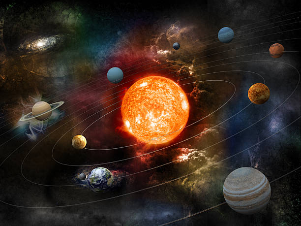
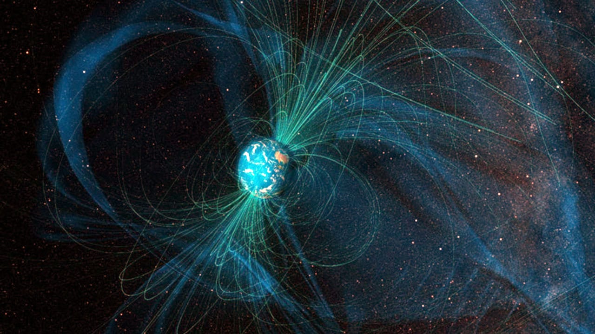

Earth and the Vast Cosmic Tapestry
Introduction:
Our planet, Earth, stands as a remarkable oasis not only in space but also in the grand sweep of time. Though it may seem enduring, Earth's existence is but a fleeting moment in the vast lifespan of the universe. For the majority of the time since the universe's inception, Earth did not exist, and its current state is impermanent. The distant future holds intriguing possibilities, including the transformative fate of our Sun, yet to unfold in the vast cosmic drama that is still being deciphered by humanity.

Origins and Time:
Earth and the solar system took shape approximately 4.6 billion years ago, a revelation uncovered through the study of radioactive decay in isotopes found on Earth and in asteroids. The distant past reveals the intricate dance of gravity, swirling gas, and dust that coalesced into our home, Earth, becoming the third planet from the Sun.
Dynamic Earth:
Earth, like its planetary siblings Mars and Venus, exhibits a dynamic landscape with volcanoes, mountains, valleys, and a lithosphere comprising massive moving plates. Its central core, rocky mantle, and solid crust contribute to the intricate tapestry of geological features.
Earth's Magnetic Identity:
The planet's rapid rotation and molten nickel-iron core give rise to a magnetic field, shaping a teardrop silhouette in space distorted by the solar wind—a stream of charged particles from the Sun. This magnetic field not only guides compass needles but also creates captivating auroras, the northern and southern lights, as charged particles interact with Earth's atmosphere.

Magnetic Field Dynamics:
Earth's magnetic field, a key player in compass navigation, holds a fascinating secret—its polarity can undergo reversals, a phenomenon occurring approximately every 400,000 years on average. Although the timing is irregular, these magnetic reversals, while unlikely to harm life on Earth, introduce the possibility of compass needles pointing in various directions for a few centuries during the transition. After completion, they will align southward instead of northward.
Embark on a cosmic exploration as we delve into Earth's origins, its dynamic geological features, and the captivating dance of its magnetic field. This journey not only unveils the intricacies of our home planet but also invites contemplation of its place within the vast cosmic expanse.